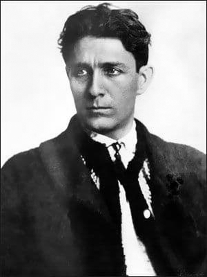
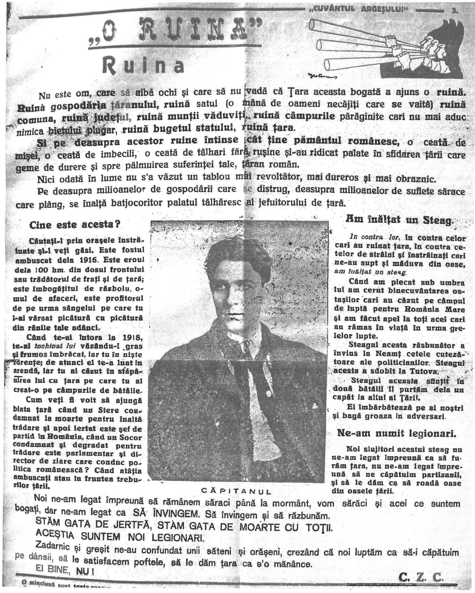

1935, Cuvântul Argeșului
Nu este om care să aibă ochi și care să nu vadă că Țara aceasta bogată a ajuns o ruină. Ruină gospodăria țăranului, ruină satul (o mână de oameni necăjiți care se vaită), ruină comuna, ruină județul, ruină munții văduviți, ruină câmpurile părăginite care nu mai aduc nimica bietului plugar, ruină bugetul statului, ruină țara.
Și pe deasupra acestor ruine întinse cât tine pământul românesc, o ceată de mișei, o ceată de imbecili, o ceată de tâlhari fără rușine și-au ridicat palate în sfidarea țării, care geme de durere și spre pălmuirea suferinței tale, țăran român.
Nici odată în lume nu s`a văzut un tablou mai revoltător, mai dureros și mai obraznic.
Pe deasupra milioanelor de gospodării care se distrug, deasupra milioanelor de suflete sărace care plâng, se înalță batjocoritor palatul tâlhăresc al jefuitorului de țară.
Căutați-l prin orașele înstrăinate și-l veți găsi. Este fostul ambuscat de la 1916. Este eroul dela 100 km din dosul frontului sau trădătorul de frați și de țară; este îmbogățitul de războiu, omul de afaceri, este profitorul de pe urma sângelui care tu l-ai vărsat, picătură cu picătură din rănile tale adânci.
Când te-ai întors la 1918, te-ai închinat lui văzându-l gras, frumos îmbrăcat, iar tu în niște zdrențe; de atunci el te-a luat în arendă, iar tu ai căzut în stăpânirea lui cu țara pe care tu ai creat-o pe câmpurile de bătălie.
Cum veți fi voit să ajungă biata țară când un Stere, condamnat la moarte pentru înaltă trădare și apoi iertat, este șef de partid în România, când un Socor condamnat și degradat pentru trădare este parlamentar și director de ziare care conduc politica românească? Când atâția ambuscați stau în fruntea treburilor țării?
În contra lor , în contra celor cari au ruinat țara, în contra cetelor de străini și înstrăinați cari ne-au supt și măduva din oase, am înălțat un steag.
Când am plecat sub umbra lui am cerut binecuvântarea ostașilor cari au căzut pe câmpul de luptă pentru România Mare și am făcut apel la toți acei cari au rămas în viață în urma grelelor lupte.
Steagul acesta răsbunător a învins la Neamț cetele cutezătoare ale politicienilor. Steagul acesta a sdrobit la Tutova.
Steagul acesta sfințit în două bătălii îl purtăm dela un capăt la altul al Țării.
El îmbărbătează pe ai noștri și bagă groază în adversari.

Noi, slujitorii acestui steag, nu ne-am legat împreună ca să furăm țara, nu ne-am legat împreună să ne căpătuim partizanii și să le dăm ca să roadă oase din oasele țării.
Noi ne-am legat împreună să rămânem săraci până la mormânt, vom sărăci și acei ce suntem bogați, dar ne-am legat SĂ ÎNVINGEM. Să învingem și să răzbunăm.
STĂM GATA DE JERTFĂ, STĂM GATA DE MOARTE CU TOȚII.
ACEȘTIA SUNTEM NOI, LEGIONARII.
Zadarnic și greșit ne-au confundat unii săteni și orășeni, crezând că noi luptăm ca să-i căpătuim pe dânșii, să le satisfacem poftele, să le dăm țara ca s-o mănânce.
EI BINE, NU!
C. Z. C.
